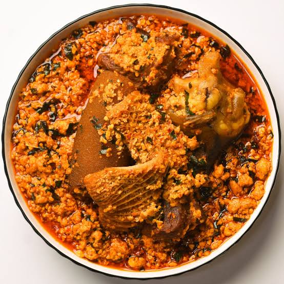

Home
Egusi Soup

Description
Egusi soup is a rich, nutty, and highly flavorful Nigerian delicacy made from ground, protein-rich melon seeds.
It is prepared with a blended pepper base, assorted meats, fish, and leafy greens
It is can be prepared with palm oil or made oil-less since the melon seed is rich in oil.
It is eaten with fufu, eba, amala, or other forms of "swallow".
However, some have gone adventurous and paired it with rice or bread.
Ingredients
- Egusi (ground melon seeds)
- Assorted meats (beef, goat meat, shaki, or cow skin/kpomo)
- Pure palm oil
- Smoked fish and stockfish head
- Ground crayfish
- Iru/dawadawa (optional)
- Pepper mix (scotch bonnet peppers (ata rodo), red bell peppers (tatashe), and onions blended together)
- Vegetables (chopped pumpkin leaves (ugu) or spinach)
- Seasoning cubes and salt to taste
Steps
- Prepare the Proteins: Season your assorted meats with chopped onions, a seasoning cube, and salt. Boil until completely tender, ensuring you save the rich meat stock.
- Make the Egusi Paste: In a bowl, mix the finely ground egusi seeds with a small amount of warm water or meat stock. Stir until it forms a thick, moldable paste.
- Fry the Base: Heat the palm oil in a large pot over medium heat (do not bleach it). Sauté a few chopped onions and the iru (locust beans) for about 1 minute until fragrant.
- Cook the Pepper Mix: Pour in the blended pepper mixture. Fry for 8 to 10 minutes until the water content reduces and the oil begins to separate to the top.
- Form Egusi Lumps: Scoop the egusi paste into the frying pepper base spoonful by spoonful. Do not stir immediately. Cover the pot and let it simmer on low heat for 10 minutes. This allows the egusi to curdle into the desired lumpy texture.
- Simmer and Combine: Gently turn the egusi lumps over. Add the cooked meats, stockfish, smoked fish, ground crayfish, and the remaining meat stock. Stir gently, cover, and let it simmer for another 15 minutes so the melon seeds cook completely.
- Add the Greens: Stir in your washed, chopped pumpkin leaves or spinach. Simmer for an additional 2 to 3 minutes until the vegetables soften but retain their bright green color. Taste and adjust seasoning with salt or bouillon if needed.
- Serve: Pair hot with your favorite swallow such as pounded yam, eba (garri), or fufu.
.